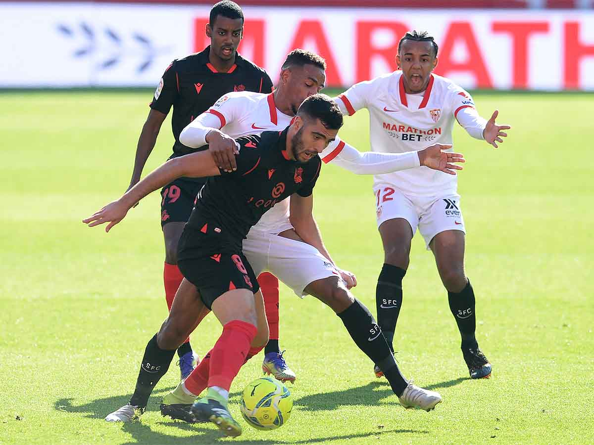

Final Score: Sevilla 3-2 Real Sociedad
A Youssef En-Nesyri hattrick was just enough to give Sevilla the win over a resilient Real Sociedad side, giving Sevilla the points to go level with La Real in the table. Here are my five key takeaways from the match:
1. 4 goals in the first 15 minutes
The match started off quickly, with En-Nesyri grabbing his first goal four minutes in. The Moroccan got onto a ball in the six yard box that Sevilla midfielder Fernando has rolled past Alex Remiro, resulting in a tap-in. However, the lead wouldn’t last long; two minutes later, Diego Carlos would put the ball into his own net, levelling the game for La Real. Viewers would only have to wait two more minutes to see the third goal, as Sevilla won the ball high up the pitch, and En-Nesyri maneuvered his way through Real Sociedad’s center backs and put the ball in the net to finish off a spectacular solo effort. The final goal of the first half would come in the 14th minute, as Real Sociedad forward Alexander Isak volleyed home a Mikel Oyarzabal coroner kick from a wide open back post position.
3. En-Nesyri puts Sevilla on his back
En-Nesyri would go on to score the game-winner in the 46th minute of the match, capping off an excellent hattrick (his second career La Liga hattrick). En-Nesyri now has eight goals from 16 La Liga appearances this season, and is tied for fifth in the top scorers list for the league. After this performance, there is no doubt that the Moroccan will continue to start for Sevilla, as he is the club’s most in-form striker at the moment (Luuk de Jong only has two goals in 16 appearances this season).
4. Real Sociedad continue to struggle
After a great start in La Liga this season, La Real have dropped off quite a bit. They have picked up 10 points from their last 10 matches, a huge drop off from the 20 points that they secured from their first nine matches this season. They just couldn’t cope with Sevilla on Saturday, and a mix of individual errors in possession and defensive system issues were responsible for their loss. Giveaways from Martin Zubimendi and Mikel Merino in their own defensive third were the causes of Sevilla's second and third goals, as they both misplaced passes that they really should have completed. Real Sociedad also utilized a defensive system that involved La Real’s players man-marking Sevilla’s, and this failed miserably. Real Sociedad’s defenders couldn’t cope with the pace and elusiveness of Sevilla’s forwards, and they lost the game because of it.

5. The race for 4th (and 3rd) place continues to heat up
At the time that this article was written, there were 2 points separating third-placed Villarreal and sixth-placed Sevilla. Villarreal was on 32 points with 18 matches played, Barcelona was on 31 with 17 matches played, Real Sociedad was on 30 points with 19 matches played, and Sevilla was on 30 with 16 matches played. With how chaotic this season has been (and will continue to be), there’s no saying which of these four teams will finish in Champions League spots. We can only hope that these teams will remain competitive and give us some watchable competition in La Liga, as there doesn’t seem to be too much of a title race shaping up, with Atletico Madrid running away at the top of La Liga.